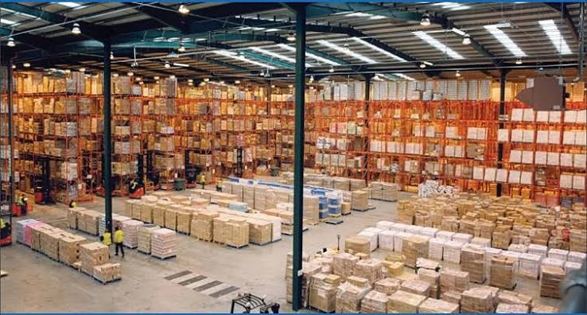

Warehouse Automation Architecture Explained: How WMS, WCS, AMR, RGV and ASRS Work Together

Summary
Modern warehouse automation is no longer about purchasing individual robots or installing an Automated Storage and Retrieval System (ASRS). The real value comes from building a fully integrated warehouse automation architecture, where software, robots, control systems, and storage equipment communicate seamlessly in real time.
Many companies understand what an AMR, RGV, or Stacker Crane does individually, but few understand how WMS, WCS, PLC, SCADA, and warehouse equipment work together as one intelligent system. Without this understanding, automation projects often suffer from poor system integration, inefficient workflows, and underutilized equipment.
This guide explains the complete warehouse automation architecture from the software layer to the equipment layer, illustrating how Warehouse Management Systems (WMS), Warehouse Control Systems (WCS), Programmable Logic Controllers (PLC), SCADA platforms, AMRs, RGVs, and Stacker Crane ASRS systems interact to create a highly efficient, scalable, and intelligent warehouse.
Whether you are designing a new automated warehouse or evaluating an existing automation project, understanding this architecture is essential for making informed technical and investment decisions.
Technology
- A complete warehouse automation architecture consists of four interconnected layers.
- Enterprise Management Layer：
- ① ERP System
- ② MES System
- ③ Production Planning
- ④ Order Management
- Warehouse Software Layer：
- ① Warehouse Management System (WMS)
- ② Warehouse Control System (WCS)
- ③ Robot Fleet Management
- ④ AI Scheduling Engine
- Equipment Control Layer：
- ① PLC Controllers
- ② SCADA Monitoring
- ③ Industrial Ethernet Network
- ④ I/O Modules
- Automation Equipment Layer：
- ① Autonomous Mobile Robots (AMR)
- ② Rail Guided Vehicles (RGV)
- ③ Stacker Crane ASRS
- ④ Conveyor Systems
- ⑤ Transfer Stations
- ⑥ Barcode & RFID Devices
Challenge
Many warehouse automation projects focus primarily on equipment selection while overlooking system architecture.
This often leads to:
① Software incompatibility.
② Data synchronization delays.
③ Robot scheduling conflicts.
④ Equipment idle time.
⑤ Poor warehouse visibility.
⑥ Difficult future expansion.
A successful warehouse automation project depends not only on selecting the right equipment but also on building an architecture where every component communicates efficiently.
Solution
An integrated warehouse automation architecture creates a clear hierarchy of responsibilities.
ERP / MES
↓
Warehouse Management System (WMS)
↓
Warehouse Control System (WCS)
↓
PLC Controllers
↓
AMR / RGV / Conveyor / Stacker Crane
↓
Warehouse Operations
Each layer performs specialized functions while exchanging real-time information with adjacent systems, enabling intelligent warehouse automation.
Workflow & Layout
1. Warehouse Management System (WMS)
The WMS serves as the warehouse's decision-making platform.
It manages inventory, storage strategies, order processing, and warehouse optimization while communicating with ERP and MES systems.
Primary Responsibilities：
① Inventory management.
② Storage allocation.
③ Order management.
④ Batch tracking.
⑤ FIFO / FEFO strategies.
⑥ Inventory reporting.
⑦ Warehouse optimization.
The WMS decides what should happen, but it does not directly control equipment.
2. Warehouse Control System (WCS)
The WCS acts as the warehouse's operational coordinator.
It converts high-level warehouse instructions into executable tasks for automation equipment.
For example:
WMS issues storage request
↓
WCS selects available crane
↓
WCS assigns AMR
↓
WCS schedules RGV
↓
PLC executes equipment movement
The WCS continuously balances workloads between multiple devices to maximize overall warehouse efficiency.
WCS Responsibilities
① Equipment scheduling.
② Task distribution.
③ Traffic management.
④ Robot coordination.
⑤ Equipment status monitoring.
⑥ Real-time optimization.
3. PLC (Programmable Logic Controller)
PLCs directly control warehouse equipment.
Unlike WMS or WCS, PLCs execute hardware operations such as:
• Motor control
• Lift movement
• Conveyor operation
• Sensor monitoring
• Position detection
• Safety interlocks
The PLC receives commands from the WCS and converts them into precise machine actions measured in milliseconds.
PLC Functions：
① Equipment control.
② Motion execution.
③ Safety protection.
④ Signal processing.
⑤ Device synchronization.
4. SCADA Visualization Platform
SCADA provides real-time visualization of warehouse operations.
Managers can monitor:
• Robot locations.
• Crane movement.
• Inventory status.
• Equipment alarms.
• System performance.
• Energy consumption.
Instead of reading raw equipment data, SCADA transforms warehouse information into intuitive dashboards and digital warehouse maps.
SCADA Benefits
① Real-time monitoring.
② Alarm management.
③ Historical analysis.
④ KPI dashboards.
⑤ Remote diagnostics.
5. Autonomous Mobile Robots (AMR)
AMRs provide flexible transportation between production areas, buffer zones, and warehouse entry points.
Unlike AGVs, AMRs navigate dynamically using laser SLAM technology and intelligent obstacle avoidance.
Typical responsibilities include:
• Finished goods transportation.
• Production supply.
• Cross-zone logistics.
• Flexible routing.
• Multi-point pickup.
The WCS continuously assigns transportation tasks to available AMRs based on workload and location.
6. Rail Guided Vehicles (RGV)
RGVs perform high-speed transportation on dedicated rail systems.
Compared with AMRs, RGVs deliver:
• Faster movement.
• Higher payload.
• Stable routing.
• Continuous transportation.
They are commonly used for:
① Buffer transfer.
② Warehouse aisle transportation.
③ Crane interface.
④ High-volume logistics.
RGVs ensure uninterrupted material flow inside large automated warehouses.
7. Stacker Crane ASRS
The stacker crane is responsible for automated storage and retrieval.
After receiving tasks from the WCS, the crane:
• Receives products.
• Lifts loads vertically.
• Travels horizontally.
• Stores inventory.
• Retrieves products.
• Returns materials for shipping.
Because storage locations are assigned automatically by the WMS, the crane maximizes warehouse density while maintaining extremely high accuracy.
Results & ROI
- 1. Traditional vs Integrated Architecture
- Traditional Warehouse Integrated Warehouse Architecture
- Independent software Unified digital platform
- Manual scheduling Intelligent automation
- Limited visibility Real-time monitoring
- Separate databases Shared information
- Equipment islands Fully connected systems
- 2. Operational Improvements
- An integrated architecture typically delivers:
- • Up to 300% higher warehouse throughput
- • 99.9% inventory accuracy
- • 70–90% reduction in manual intervention
- • 50–80% lower coordination time
- • 2–5× faster order processing
- Actual results vary depending on system scale and operational complexity.
- 3. Integration Benefits
- The primary value of system integration includes:
- ① Unified data.
- ② Intelligent scheduling.
- ③ Real-time decision making.
- ④ Predictive maintenance.
- ⑤ Simplified future expansion.
- A well-designed architecture enables every subsystem to contribute to overall warehouse performance.
- 4. Scalability
- Because each layer communicates through standardized interfaces
- manufacturers can expand the system by adding:
- • More AMRs.
- • Additional RGV lines.
- • New stacker cranes.
- • Extra storage aisles.
- • AI scheduling modules.
- • Vision inspection systems.
- Expansion requires minimal changes to the existing architecture.
- 5. Return on Investment
- Although software integration represents a significant portion of automation investment
- it also creates long-term value through:
- • Higher equipment utilization.
- • Reduced implementation risk.
- • Lower maintenance costs.
- • Faster operational response.
- • Greater flexibility for future upgrades.
- Most integrated warehouse automation projects achieve an ROI within 18–36 months
- driven by sustained productivity improvements rather than hardware alone.
Equipment List
- Enterprise Systems：
- ① ERP
- ② MES
- Warehouse Software：
- ① WMS
- ② WCS
- ③ Robot Fleet Management
- ④ AI Scheduler
- Control Systems：
- ① PLC
- ② SCADA
- ③ Industrial Ethernet
- ④ OPC UA Gateway
- Automation Equipment：
- ① AMR
- ② RGV
- ③ Stacker Crane
- ④ Conveyor
- ⑤ Transfer Station
- ⑥ Barcode Scanner
- ⑦ RFID Reader
Project Overview / Opening
This warehouse automation architecture demonstrates how intelligent software, industrial control systems, and automation equipment operate as a unified digital ecosystem.
Rather than functioning as independent components, WMS, WCS, PLC, SCADA, AMRs, RGVs, and stacker cranes continuously exchange operational data and coordinate warehouse activities in real time. This layered architecture supports higher throughput, greater inventory accuracy, simplified maintenance, and scalable expansion, making it the foundation of modern smart warehouses.
Key Points
- ① WMS Decides What Should Happen
- The WMS manages inventory, orders, and warehouse strategies, generating high-level operational tasks.
- ② WCS Decides How Tasks Are Executed
- The WCS transforms warehouse instructions into optimized equipment schedules while balancing workloads across the automation system.
- ③ PLC Executes Machine-Level Control
- PLCs directly control motors, sensors, conveyors, cranes, and safety devices with high-speed, deterministic performance.
- ④ SCADA Makes the Warehouse Visible
- SCADA converts complex operational data into intuitive dashboards, alarms, trends, and digital warehouse visualization for operators and managers.
- ⑤ Integration Is the Key to Smart Warehouses
- AMRs, RGVs, stacker cranes, software platforms, and control systems only achieve maximum value when they are integrated through a unified architecture that enables seamless communication and coordinated decision-making.
Implementation / Workflow
1. System Control Hierarchy
ERP / MES
▼
Warehouse Management System (WMS)
▼
Warehouse Control System (WCS)
▼
PLC Controllers
▼
AMR / RGV / Conveyor / Stacker Crane
▼
Sensors & Equipment Feedback
This layered architecture separates business decisions, operational scheduling, machine control, and physical execution.
2. Warehouse Data Flow
A typical warehouse operation follows this sequence:
Customer Order
↓
ERP
↓
WMS
↓
WCS
↓
PLC
↓
AMR Transportation
↓
RGV Transfer
↓
Stacker Crane Storage
↓
Inventory Update
↓
SCADA Visualization
↓
ERP Feedback
Every movement generates real-time data that flows back through the system, ensuring complete operational transparency.
3. Communication Relationships
System Communicates With Primary Purpose
ERP WMS Production & order data
MES WMS Manufacturing information
WMS WCS Warehouse task generation
WCS PLC Equipment commands
PLC Equipment Motion control
Equipment PLC Status feedback
PLC SCADA Real-time monitoring
SCADA Operators Visualization & alarms
Each layer exchanges only the information necessary for its responsibilities, simplifying integration and improving reliability.
4. Communication Protocols
Modern warehouse automation typically uses industrial communication standards such as:
① OPC UA
② Profinet
③ EtherNet/IP
④ Modbus TCP
⑤ MQTT
⑥ REST API
⑦ SQL Database Integration
These protocols allow software platforms and equipment from different manufacturers to communicate securely and efficiently.
5. System Integration Methods
A complete warehouse automation project usually integrates multiple business systems.
ERP
↓
MES
↓
WMS
↓
WCS
↓
SCADA
↓
PLC
↓
Automation Equipment
↓
Barcode / RFID / IoT Devices
This modular architecture allows future equipment or software to be added with minimal disruption.
Customer Value / Results
Operational Value:
① Real-time warehouse visibility.
② Higher equipment utilization.
③ Faster decision making.
④ Continuous material flow.
⑤ Simplified warehouse management.
Financial Value:
① Lower operating costs.
② Better software investment utilization.
③ Reduced maintenance expenses.
④ Improved labor productivity.
⑤ Faster ROI.
Strategic Value:
① Industry 4.0 readiness.
② Smart factory integration.
③ Scalable digital infrastructure.
④ Vendor-independent architecture.
⑤ Future-proof warehouse automation.
Conclusion / Next Step
A modern warehouse automation project is not simply a collection of robots and storage equipment. It is a carefully designed digital architecture in which WMS manages warehouse intelligence, WCS orchestrates operations, PLCs execute machine control, SCADA provides real-time visibility, and AMRs, RGVs, and stacker cranes perform synchronized physical tasks.
Organizations that invest in a well-integrated architecture gain far more than automation. They build a warehouse platform capable of supporting business growth, adapting to changing production demands, integrating new technologies, and maintaining high operational efficiency for years to come. For manufacturers, logistics providers, and system integrators, understanding this architecture is the foundation for designing resilient, scalable, and future-ready warehouse automation solutions.
SEO Title
Warehouse Automation Architecture Explained: How WMS, WCS, AMR, RGV and ASRS Work Together
SEO Description
Modern warehouse automation is no longer about purchasing individual robots or installing an Automated Storage and Retrieval System (ASRS). The real value comes from building a fully integrated warehouse automation architecture, where software, robots, control systems, and storage equipment communicate seamlessly in real time.
Many companies understand what an AMR, RGV, or Stacker Crane does individually, but few understand how WMS, WCS, PLC, SCADA, and warehouse equipment work together as one intelligent system. Without this understanding, automation projects often suffer from poor system integration, inefficient workflows, and underutilized equipment.
This guide explains the complete warehouse automation architecture from the software layer to the equipment layer, illustrating how Warehouse Management Systems (WMS), Warehouse Control Systems (WCS), Programmable Logic Controllers (PLC), SCADA platforms, AMRs, RGVs, and Stacker Crane ASRS systems interact to create a highly efficient, scalable, and intelligent warehouse.
Whether you are designing a new automated warehouse or evaluating an existing automation project, understanding this architecture is essential for making informed technical and investment decisions.
Related Blog
Start with Your Business Challenge
Tell us about your warehouse, factory, or production requirements. We'll help you explore practical automation solutions and relevant project references.